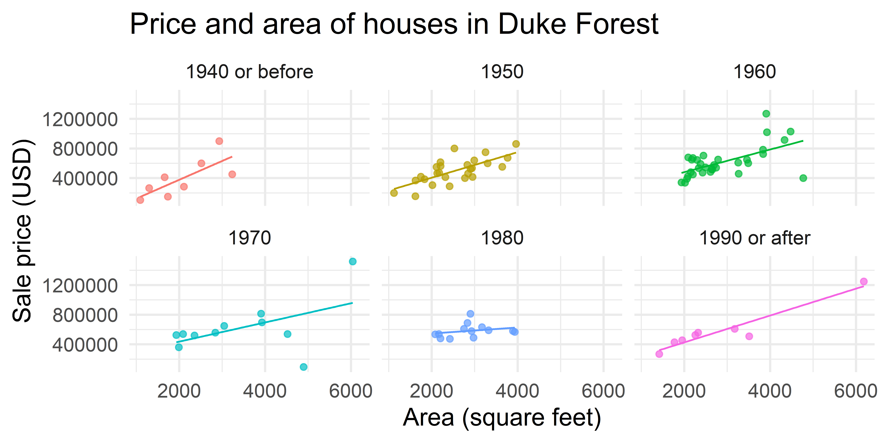
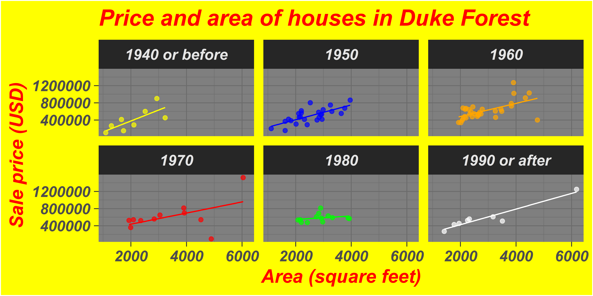
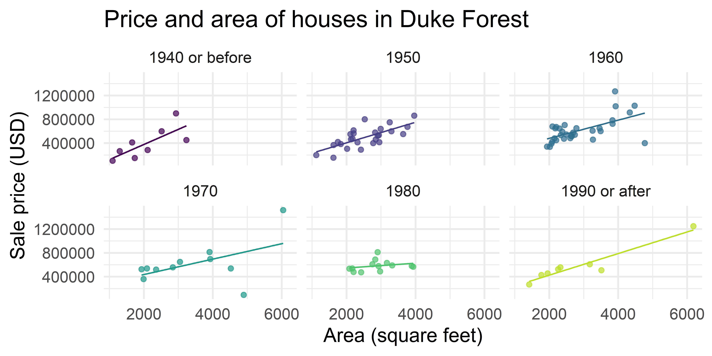
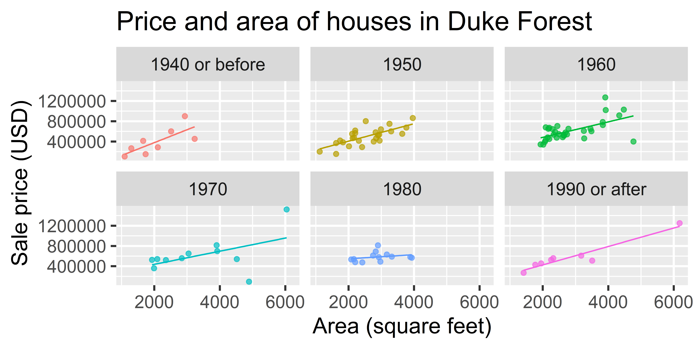
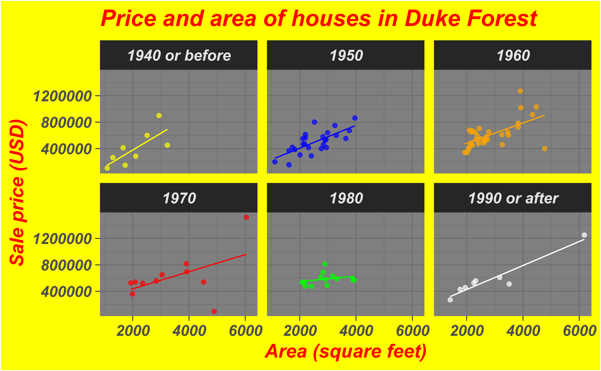
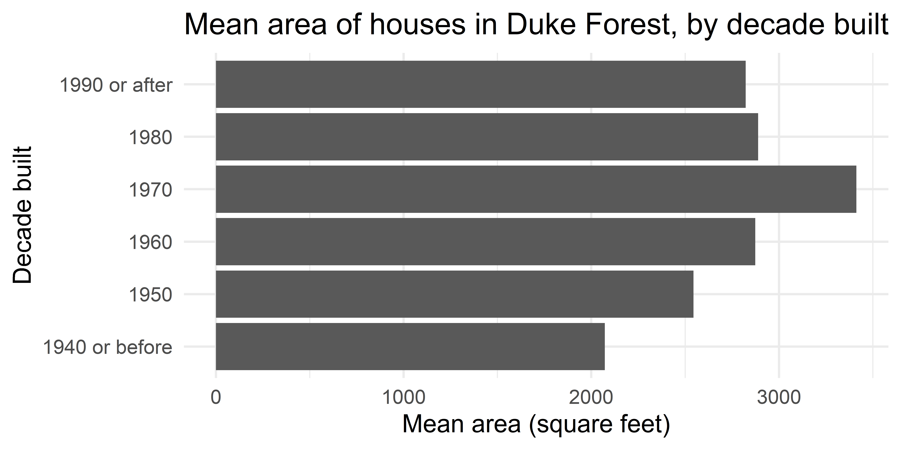
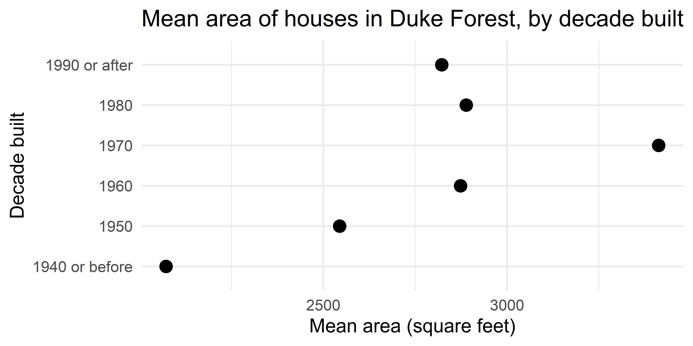
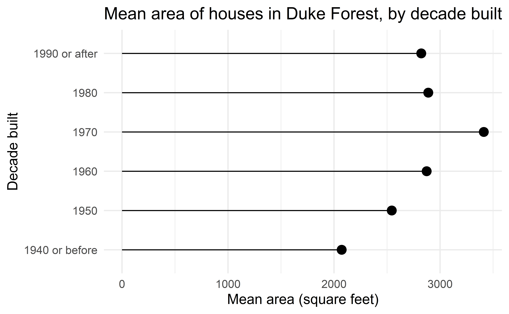
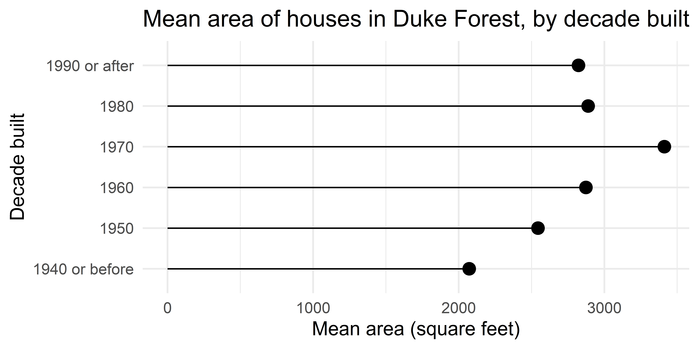

# load packages
library(tidyverse)
library(openintro)
library(countdown)
# set theme for ggplot2
ggplot2::theme_set(ggplot2::theme_minimal(base_size = 14))
# set width of code output
options(width = 65)
# set figure parameters for knitr
knitr::opts_chunk$set(
fig.width = 7, # 7" width
fig.asp = 0.618, # the golden ratio
fig.retina = 3, # dpi multiplier for displaying HTML output on retina
fig.align = "center", # center align figures
dpi = 300 # higher dpi, sharper image
)Deep dive into ggplot2 layers - I
Lecture 1
Warm up
Announcements
Office hours + locations finalized at vizdata.org/course-team.html.
Don’t forget to complete the getting to know you survey by 8pm today at the latest!
A note on readings for this week: Some of it is review so feel free to skim those parts.
Setup
A/B testing
Data: Sale prices of houses in Duke Forest
Data on houses that were sold in the Duke Forest neighborhood of Durham, NC around November 2020
Scraped from Zillow
Source:
openintro::duke_forest

openintro::duke_forest
library(tidyverse)
library(openintro)
glimpse(duke_forest)Rows: 98
Columns: 13
$ address <chr> "1 Learned Pl, Durham, NC 27705", "1616 Pine…
$ price <dbl> 1520000, 1030000, 420000, 680000, 428500, 45…
$ bed <dbl> 3, 5, 2, 4, 4, 3, 5, 4, 4, 3, 4, 4, 3, 5, 4,…
$ bath <dbl> 4.0, 4.0, 3.0, 3.0, 3.0, 3.0, 5.0, 3.0, 5.0,…
$ area <dbl> 6040, 4475, 1745, 2091, 1772, 1950, 3909, 28…
$ type <chr> "Single Family", "Single Family", "Single Fa…
$ year_built <dbl> 1972, 1969, 1959, 1961, 2020, 2014, 1968, 19…
$ heating <chr> "Other, Gas", "Forced air, Gas", "Forced air…
$ cooling <fct> central, central, central, central, central,…
$ parking <chr> "0 spaces", "Carport, Covered", "Garage - At…
$ lot <dbl> 0.97, 1.38, 0.51, 0.84, 0.16, 0.45, 0.94, 0.…
$ hoa <chr> NA, NA, NA, NA, NA, NA, NA, NA, NA, NA, NA, …
$ url <chr> "https://www.zillow.com/homedetails/1-Learne…A simple visualization
ggplot(duke_forest, aes(x = area, y = price)) +
geom_point(alpha = 0.7, size = 2) +
geom_smooth(method = "lm", se = FALSE, size = 0.7) +
labs(
x = "Area (square feet)",
y = "Sale price (USD)",
title = "Price and area of houses in Duke Forest"
)Warning: Using `size` aesthetic for lines was deprecated in ggplot2
3.4.0.
ℹ Please use `linewidth` instead.`geom_smooth()` using formula = 'y ~ x'`geom_smooth()` using formula = 'y ~ x'
New variable: decade_built
duke_forest <- duke_forest |>
mutate(decade_built = (year_built %/% 10) * 10)
duke_forest |>
select(year_built, decade_built)# A tibble: 98 × 2
year_built decade_built
<dbl> <dbl>
1 1972 1970
2 1969 1960
3 1959 1950
4 1961 1960
5 2020 2020
6 2014 2010
7 1968 1960
8 1973 1970
9 1972 1970
10 1964 1960
# … with 88 more rowsNew variable: decade_built_cat
duke_forest <- duke_forest |>
mutate(
decade_built_cat = case_when(
decade_built <= 1940 ~ "1940 or before",
decade_built >= 1990 ~ "1990 or after",
TRUE ~ as.character(decade_built)
)
)
duke_forest |>
count(decade_built_cat)# A tibble: 6 × 2
decade_built_cat n
<chr> <int>
1 1940 or before 8
2 1950 26
3 1960 32
4 1970 11
5 1980 13
6 1990 or after 8A slightly more complex visualization
ggplot(
duke_forest,
aes(x = area, y = price, color = decade_built_cat)
) +
geom_point(alpha = 0.7, show.legend = FALSE) +
geom_smooth(method = "lm", se = FALSE, size = 0.5, show.legend = FALSE) +
facet_wrap(~decade_built_cat) +
labs(
x = "Area (square feet)",
y = "Sale price (USD)",
color = "Decade built",
title = "Price and area of houses in Duke Forest"
)`geom_smooth()` using formula = 'y ~ x'`geom_smooth()` using formula = 'y ~ x'
A/B testing
In the next two slides, the same plots are created with different “cosmetic” choices. Examine the plots two given (Plot A and Plot B), and indicate your preference by voting for one of them in the Vote tab.
Test 1
`geom_smooth()` using formula = 'y ~ x'
`geom_smooth()` using formula = 'y ~ x'
Test 2
`geom_smooth()` using formula = 'y ~ x'
`geom_smooth()` using formula = 'y ~ x'
What makes figures bad?
Bad taste
`geom_smooth()` using formula = 'y ~ x'
Data-to-ink ratio
Tufte strongly recommends maximizing the data-to-ink ratio this in the Visual Display of Quantitative Information (Tufte, 1983).
Graphical excellence is the well-designed presentation of interesting data—a matter of substance, of statistics, and of design … [It] consists of complex ideas communicated with clarity, precision, and efficiency. … [It] is that which gives to the viewer the greatest number of ideas in the shortest time with the least ink in the smallest space … [It] is nearly always multivariate … And graphical excellence requires telling the truth about the data. (Tufte, 1983, p. 51).

Which of the plots has higher data-to-ink ratio?


A deeper look
at the plotting code
Summary statistics
mean_area_decade <- duke_forest |>
group_by(decade_built_cat) |>
summarise(mean_area = mean(area))
mean_area_decade# A tibble: 6 × 2
decade_built_cat mean_area
<chr> <dbl>
1 1940 or before 2072.
2 1950 2545.
3 1960 2873.
4 1970 3413.
5 1980 2889.
6 1990 or after 2822.Barplot

Scaterplot

Lollipop chart – a happy medium?

Application exercise
Go to the course GitHub organization: https://github.com/vizdata-s23
Clone the repo called
ae-01and work on the exercise.- Note: For today, this is not a personalized repo for you. The repo is public so everyone can clone it, but you won’t be able to push to it. Starting Thursday you’ll start getting your personalized repos you can push to.
Once you’re done, share your code on Slack in #general.
Label your chunk(s) and pay attention to code style and formatting!
10:00
Bad data


Healy, Data Visualization: A practical introduction. Chapter 1. Figures 1.8 and 1.9.
Bad perception

Healy, Data Visualization: A practical introduction. Chapter 1. Figure 1.12.
Aesthetic mappings in ggplot2
A second look: lollipop chart

ggplot(
mean_area_decade,
aes(y = decade_built_cat, x = mean_area)
) +
geom_point(size = 4) +
geom_segment(aes(
x = 0, xend = mean_area,
y = decade_built_cat, yend = decade_built_cat
)) +
labs(
x = "Mean area (square feet)",
y = "Decade built",
title = "Mean area of houses in Duke Forest, by decade built"
)Activity: Spot the differences |

ggplot(
mean_area_decade,
aes(y = decade_built_cat, x = mean_area)
) +
geom_point(size = 4) +
geom_segment(aes(
xend = 0,
yend = decade_built_cat
)) +
labs(
x = "Mean area (square feet)",
y = "Decade built",
title = "Mean area of houses in Duke Forest, by decade built"
)Can you spot the differences between the code here and the one provided in the previous slide? Are there any differences in the resulting plot? Work in a pair (or group) to answer.
03:00
Global vs. layer-specific aesthetics
Aesthetic mappings can be supplied in the initial
ggplot()call, in individual layers, or in some combination of both.Within each layer, you can add, override, or remove mappings.
If you only have one layer in the plot, the way you specify aesthetics doesn’t make any difference. However, the distinction is important when you start adding additional layers.
Activity: Spot the differences I|
Do you expect the following plots to be the same or different? If different, how? Discuss in a pair (or group) without running the code and sketch the resulting plots based on what you think the code will produce.
# Plot A
ggplot(duke_forest, aes(x = area, y = price)) +
geom_point(aes(color = decade_built_cat))# Plot B
ggplot(duke_forest, aes(x = area, y = price)) +
geom_point(color = "blue")# Plot C
ggplot(duke_forest, aes(x = area, y = price)) +
geom_point(color = "#a493ba")03:00
Wrap up
Think back to all the plots you saw in the lecture, without flipping back through the slides. Which plot first comes to mind? Describe it in words.